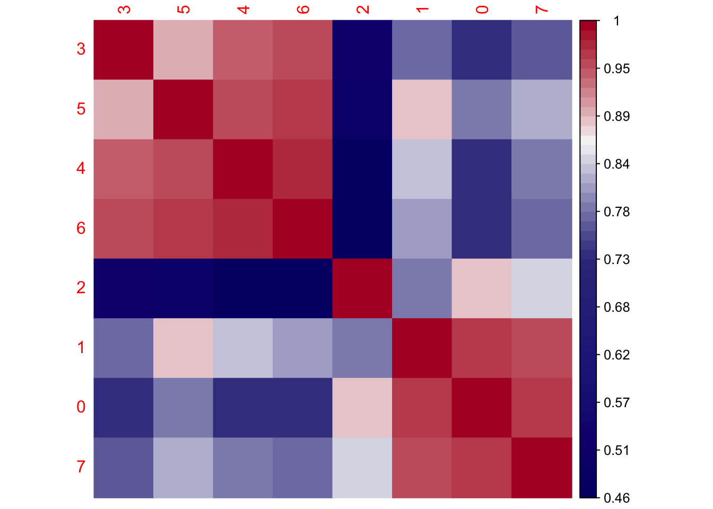
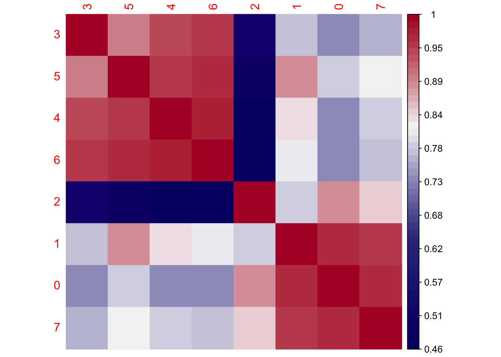
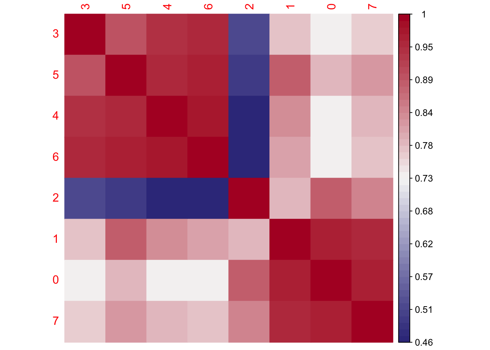
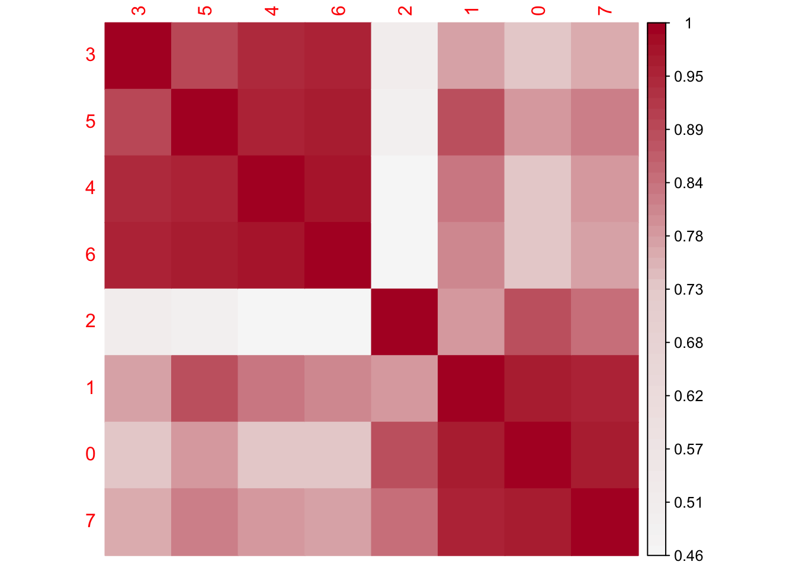
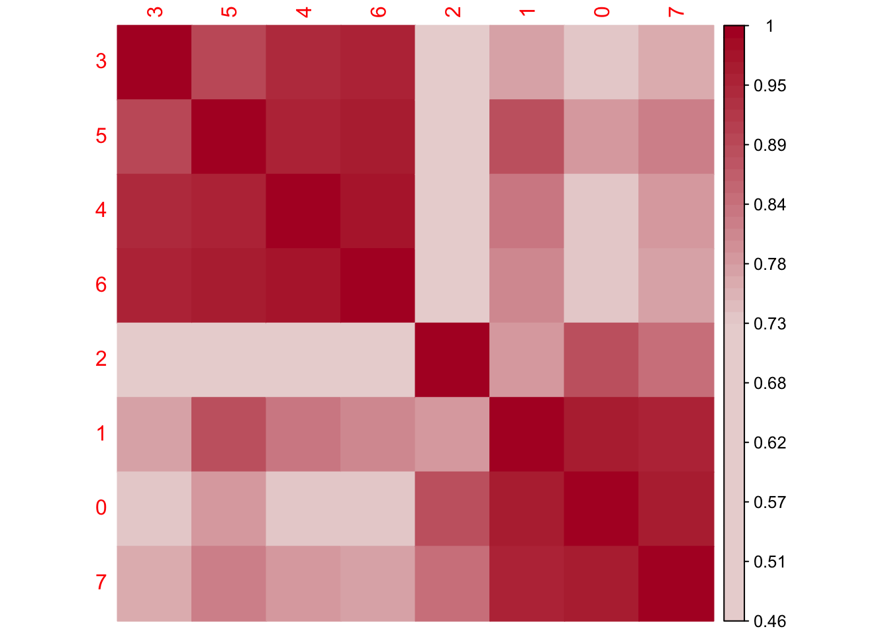
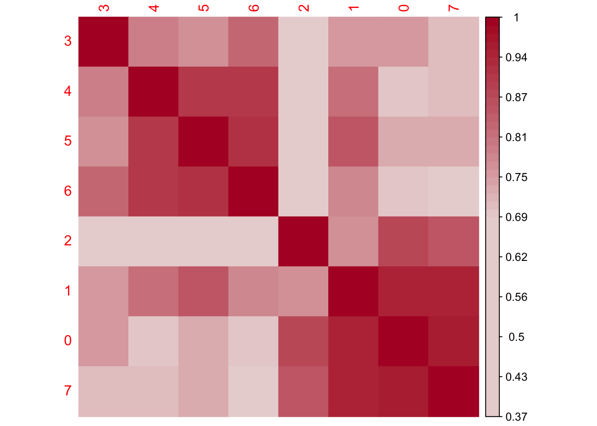

Correlation analysis gene expression FRCs
Load packages
## load packages
suppressPackageStartupMessages({
library(dplyr)
library(reshape2)
library(ggplot2)
library(cowplot)
library(purrr)
library(Seurat)
library(tidyverse)
library(ggpubr)
library(runSeurat3)
library(here)
library(ggsci)
library(pheatmap)
library(scater)
library(scran)
library(corrplot)
library(RColorBrewer)
})load seurat object
basedir <- here()
seurat <- readRDS(file= paste0(basedir,
"/data/AllPatWithoutCM_FRConly_intOrig_seurat.rds"))
DefaultAssay(object = seurat) <- "RNA"
## set col palettes
colPal <- c(pal_uchicago()(6), "#6692a3", "#3b7f60")
names(colPal) <- c("0", "1", "2", "3", "4", "5", "6", "7")
colPat <- c(pal_nejm()(7),pal_futurama()(12))[1:length(unique(seurat$patient))]
names(colPat) <- unique(seurat$patient)
colCond2 <- c("#6692a3","#971c1c","#d17d67")
names(colCond2) <- unique(seurat$cond)
colGrp <- pal_uchicago()(length(unique(seurat$grp)))
names(colGrp) <- unique(seurat$grp)
colOri <- pal_npg()(length(unique(seurat$origin)))
names(colOri) <- unique(seurat$origin)
## all activated in one grp
seurat$cond2 <- seurat$cond
seurat$cond[which(seurat$cond %in% c("chronic", "acute"))] <- "activated"
colCond <- c("#6692a3","#971c1c")
names(colCond) <- c("resting", "activated")subset only resting
seurat <- subset(seurat, cond=="resting")visualize data
clustering
## visualize input data
DimPlot(seurat, reduction = "umap", cols=colPal)+
theme_bw() +
theme(axis.text = element_blank(), axis.ticks = element_blank(),
panel.grid.minor = element_blank()) +
xlab("UMAP1") +
ylab("UMAP2")
DimPlot(seurat, reduction = "umap", cols=colPal, pt.size=1)+
theme_void()
patient
## visualize input data
DimPlot(seurat, reduction = "umap", cols=colPat, group.by = "patient")+
theme_bw() +
theme(axis.text = element_blank(), axis.ticks = element_blank(),
panel.grid.minor = element_blank()) +
xlab("UMAP1") +
ylab("UMAP2")
DimPlot(seurat, reduction = "umap", cols=colPat, group.by = "patient",
pt.size=0.5, shuffle = T)+
theme_void()
cond
## visualize input data
DimPlot(seurat, reduction = "umap", cols=colCond, group.by = "cond")+
theme_bw() +
theme(axis.text = element_blank(), axis.ticks = element_blank(),
panel.grid.minor = element_blank()) +
xlab("UMAP1") +
ylab("UMAP2")
DimPlot(seurat, reduction = "umap", cols=colCond, group.by = "cond",
pt.size=0.5, shuffle = T)+
theme_void()
grp
## visualize input data
DimPlot(seurat, reduction = "umap", cols=colGrp, group.by = "grp")+
theme_bw() +
theme(axis.text = element_blank(), axis.ticks = element_blank(),
panel.grid.minor = element_blank()) +
xlab("UMAP1") +
ylab("UMAP2")
origin
## visualize input data
DimPlot(seurat, reduction = "umap", cols=colOri, group.by = "origin")+
theme_bw() +
theme(axis.text = element_blank(), axis.ticks = element_blank(),
panel.grid.minor = element_blank()) +
xlab("UMAP1") +
ylab("UMAP2")
generating pseudobulks for each cluster across hvgs
Idents(seurat) <- seurat$intCluster
sce <- as.SingleCellExperiment(seurat)
#sce.hvg <- modelGeneVar(sce)
#sce.hvg.var <- getTopHVGs(sce.hvg, n=1000)
summed <- aggregateAcrossCells(sce,
id=colData(sce)[,c("intCluster")])
#summed <- summed[sce.hvg.var,]
hvg.mat <- as.matrix(summed@assays@data$counts)
cor.mat <- cor(hvg.mat)
corrplot(cor.mat, type="full", order="hclust",
col=colorRampPalette(c("#050473","#242389","#39388a","#F7F7F7", "#B2182B"))(50),
is.corr = FALSE,
method = "color")
corrplot(cor.mat, type="full", order="hclust",
col=colorRampPalette(c("#050473","#39388a","#F7F7F7", "#B2182B"))(50),
is.corr = FALSE,
method = "color")
corrplot(cor.mat, type="full", order="hclust",
col=colorRampPalette(c("#39388a","#F7F7F7", "#B2182B"))(50),
is.corr = FALSE,
method = "color")
corrplot(cor.mat, type="full", order="hclust",
col=colorRampPalette(c("#F7F7F7", "#ead5d5", "#B2182B"))(50),
is.corr = FALSE,
method = "color")
corrplot(cor.mat, type="full", order="hclust",
col=colorRampPalette(c("#ead5d5", "#ead5d5", "#B2182B"))(50),
is.corr = FALSE,
method = "color")
sce.hvg <- modelGeneVar(sce)
sce.hvg.var <- getTopHVGs(sce.hvg, n=1000)
summed <- aggregateAcrossCells(sce,
id=colData(sce)[,c("intCluster")])
summed <- summed[sce.hvg.var,]
hvg.mat <- as.matrix(summed@assays@data$counts)
cor.mat <- cor(hvg.mat)
corrplot(cor.mat, type="full", order="hclust",
col=colorRampPalette(c("#ead5d5", "#ead5d5", "#B2182B"))(50),
is.corr = FALSE,
method = "color")
session info
sessionInfo()R version 4.3.0 (2023-04-21)
Platform: x86_64-apple-darwin20 (64-bit)
Running under: macOS Ventura 13.4.1
Matrix products: default
BLAS: /Library/Frameworks/R.framework/Versions/4.3-x86_64/Resources/lib/libRblas.0.dylib
LAPACK: /Library/Frameworks/R.framework/Versions/4.3-x86_64/Resources/lib/libRlapack.dylib; LAPACK version 3.11.0
locale:
[1] en_US.UTF-8/en_US.UTF-8/en_US.UTF-8/C/en_US.UTF-8/en_US.UTF-8
time zone: Europe/Berlin
tzcode source: internal
attached base packages:
[1] stats4 stats graphics grDevices utils datasets methods base
other attached packages:
[1] Matrix_1.6-5 RColorBrewer_1.1-3 corrplot_0.92
[4] scran_1.28.2 scater_1.28.0 scuttle_1.10.3
[7] SingleCellExperiment_1.22.0 SummarizedExperiment_1.30.2 Biobase_2.60.0
[10] GenomicRanges_1.52.1 GenomeInfoDb_1.36.4 IRanges_2.36.0
[13] S4Vectors_0.40.1 BiocGenerics_0.48.0 MatrixGenerics_1.12.3
[16] matrixStats_1.2.0 pheatmap_1.0.12 ggsci_3.0.1
[19] here_1.0.1 runSeurat3_0.1.0 ggpubr_0.6.0
[22] lubridate_1.9.3 forcats_1.0.0 stringr_1.5.1
[25] readr_2.1.5 tidyr_1.3.1 tibble_3.2.1
[28] tidyverse_2.0.0 Seurat_5.0.2 SeuratObject_5.0.1
[31] sp_2.1-3 purrr_1.0.2 cowplot_1.1.3
[34] ggplot2_3.5.0 reshape2_1.4.4 dplyr_1.1.4
loaded via a namespace (and not attached):
[1] RcppAnnoy_0.0.22 splines_4.3.0 later_1.3.2
[4] bitops_1.0-7 polyclip_1.10-6 fastDummies_1.7.3
[7] lifecycle_1.0.4 rstatix_0.7.2 edgeR_3.42.4
[10] rprojroot_2.0.4 globals_0.16.2 lattice_0.22-5
[13] MASS_7.3-60.0.1 backports_1.4.1 magrittr_2.0.3
[16] limma_3.56.2 plotly_4.10.4 rmarkdown_2.26
[19] yaml_2.3.8 metapod_1.8.0 httpuv_1.6.14
[22] sctransform_0.4.1 spam_2.10-0 spatstat.sparse_3.0-3
[25] reticulate_1.35.0 pbapply_1.7-2 abind_1.4-5
[28] zlibbioc_1.46.0 Rtsne_0.17 RCurl_1.98-1.14
[31] GenomeInfoDbData_1.2.10 ggrepel_0.9.5 irlba_2.3.5.1
[34] listenv_0.9.1 spatstat.utils_3.0-4 goftest_1.2-3
[37] RSpectra_0.16-1 dqrng_0.3.2 spatstat.random_3.2-3
[40] fitdistrplus_1.1-11 parallelly_1.37.1 DelayedMatrixStats_1.22.6
[43] leiden_0.4.3.1 codetools_0.2-19 DelayedArray_0.26.7
[46] tidyselect_1.2.0 farver_2.1.1 viridis_0.6.5
[49] ScaledMatrix_1.8.1 spatstat.explore_3.2-6 jsonlite_1.8.8
[52] BiocNeighbors_1.18.0 ellipsis_0.3.2 progressr_0.14.0
[55] ggridges_0.5.6 survival_3.5-8 tools_4.3.0
[58] ica_1.0-3 Rcpp_1.0.12 glue_1.7.0
[61] gridExtra_2.3 xfun_0.42 withr_3.0.0
[64] fastmap_1.1.1 bluster_1.10.0 fansi_1.0.6
[67] rsvd_1.0.5 digest_0.6.34 timechange_0.3.0
[70] R6_2.5.1 mime_0.12 colorspace_2.1-0
[73] scattermore_1.2 tensor_1.5 spatstat.data_3.0-4
[76] utf8_1.2.4 generics_0.1.3 data.table_1.15.2
[79] httr_1.4.7 htmlwidgets_1.6.4 S4Arrays_1.0.6
[82] uwot_0.1.16 pkgconfig_2.0.3 gtable_0.3.4
[85] lmtest_0.9-40 XVector_0.40.0 htmltools_0.5.7
[88] carData_3.0-5 dotCall64_1.1-1 scales_1.3.0
[91] png_0.1-8 knitr_1.45 rstudioapi_0.15.0
[94] tzdb_0.4.0 nlme_3.1-164 zoo_1.8-12
[97] KernSmooth_2.23-22 vipor_0.4.7 parallel_4.3.0
[100] miniUI_0.1.1.1 pillar_1.9.0 grid_4.3.0
[103] vctrs_0.6.5 RANN_2.6.1 promises_1.2.1
[106] BiocSingular_1.16.0 car_3.1-2 beachmat_2.16.0
[109] xtable_1.8-4 cluster_2.1.6 beeswarm_0.4.0
[112] evaluate_0.23 locfit_1.5-9.9 cli_3.6.2
[115] compiler_4.3.0 rlang_1.1.3 crayon_1.5.2
[118] future.apply_1.11.1 ggsignif_0.6.4 labeling_0.4.3
[121] ggbeeswarm_0.7.2 plyr_1.8.9 stringi_1.8.3
[124] BiocParallel_1.34.2 viridisLite_0.4.2 deldir_2.0-4
[127] munsell_0.5.0 lazyeval_0.2.2 spatstat.geom_3.2-9
[130] RcppHNSW_0.6.0 hms_1.1.3 patchwork_1.2.0
[133] sparseMatrixStats_1.12.2 future_1.33.1 statmod_1.5.0
[136] shiny_1.8.0 ROCR_1.0-11 igraph_2.0.2
[139] broom_1.0.5 date()[1] "Wed Mar 13 18:45:43 2024"